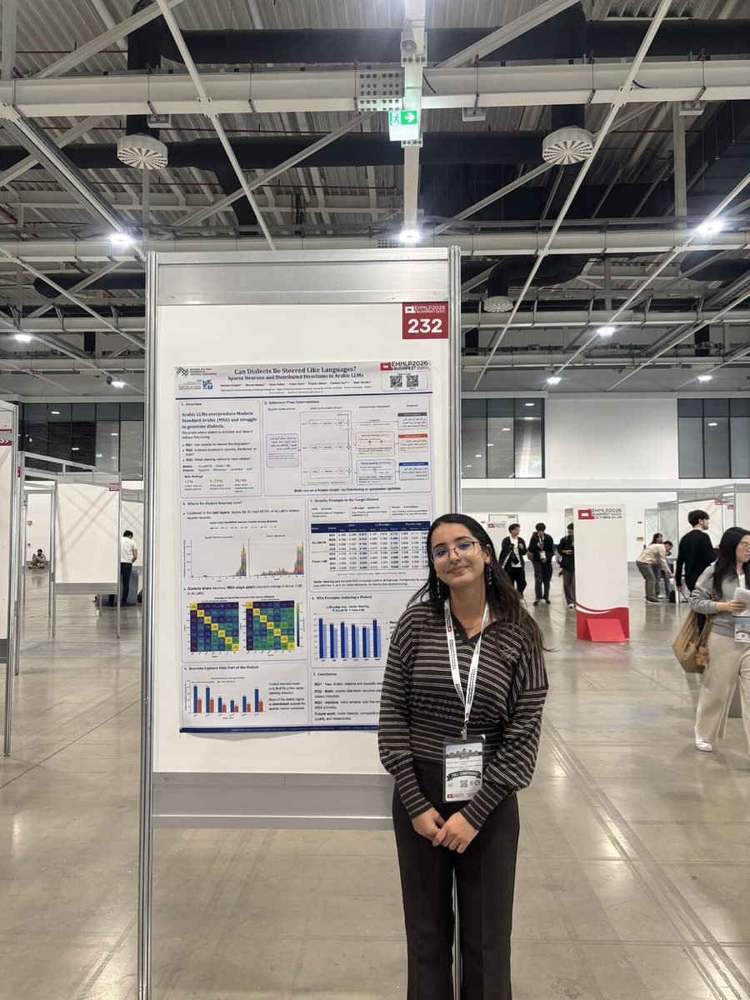

Oct 2026
Presented at EMNLP 2026 in Budapest
Presented our co-first-authored Findings paper, “Can Dialects Be Steered Like Languages? Sparse Neurons and Distributed Directions in Arabic LLMs”, to a busy poster session. Our Jais 2 paper was presented at the same time in the main conference.